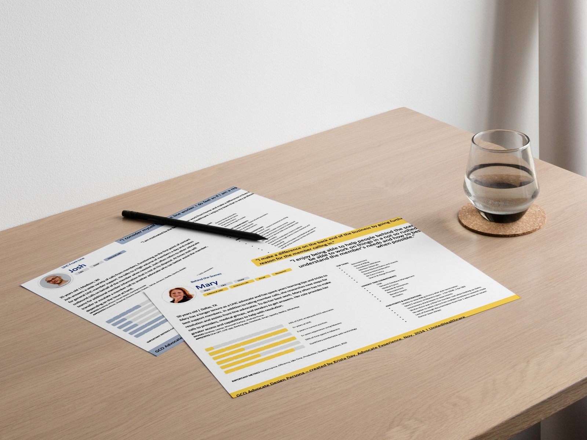

UnitedHealthcare · Principal UX Designer
Data-Driven Personas
Operationalizing data-driven personas to align government call center strategy — replacing static marketing profiles with dynamic, role-based personas embedded in the SDLC.
+21%Delivery velocity
−25%Design iterations
+24NPS